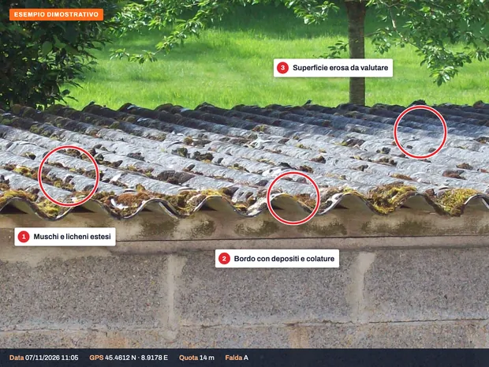
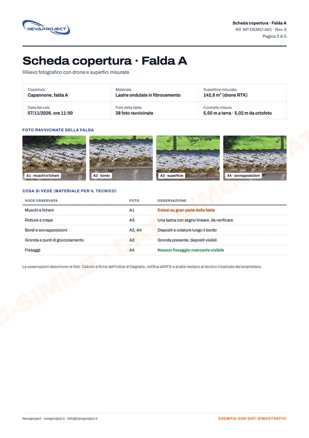

A cosa servono le foto.
In Lombardia chi ha una copertura in cemento-amianto deve notificarla all'ATS con il modulo NA/1 e valutarne lo stato con l'Indice di Degrado, che si basa su un'ispezione visiva. Le nostre foto ravvicinate per falda sono il materiale su cui lavora il tecnico.
Nelle altre regioni consegniamo lo stesso rilievo fotografico con le misure, da usare secondo le regole locali.
- Proprietari di cascine, capannoni, box e tettoie
- Condomini con box o coperture in eternit
- Ditte di bonifica che devono preparare un preventivo
- Installatori di impianti che devono togliere l'eternit prima dei lavori
- Tecnici che compilano l'Indice di Degrado
Come funziona.
Richiesta
Indirizzo, numero di coperture e, se c'è, la superficie indicativa. Se il tecnico ha bisogno di inquadrature particolari, le concordiamo prima del volo.
Volo
Fotografiamo ogni falda da vicino con lo zoom: crepe, rotture, sfaldamenti, muschi e licheni, bordi e punti di gocciolamento. Il drone non tocca la copertura.
Consegna
Una scheda per ogni falda con le foto ravvicinate e la superficie misurata, più tutte le foto originali. Il tecnico ha il materiale per l'Indice, la ditta i metri quadri per il preventivo.
Chi fa cosa.
Il rilievo con il drone è una parte del lavoro. Calcolo, firma e pratiche restano al proprietario e ai suoi tecnici.
- Foto ravvicinate di ogni falda
- Superfici misurate (m²)
- Scheda per falda
- Video della copertura
- Foto originali con data e GPS
Misure accurate grazie al drone con RTK; non sostituiscono un rilievo topografico. A ogni lavoro confrontiamo una lunghezza presa a terra con il metro.
- Foto ravvicinate di ogni falda
- Superfici misurate con il drone RTK
- Scheda per falda e foto originali con data e GPS
Il proprietario, con i suoi tecnici
- Calcolo e firma dell'Indice di Degrado (tecnico)
- Notifica all'ATS con il modulo NA/1
- Campionamenti, analisi e bonifica (ditte specializzate)
Esempi di consegna.
Ecco cosa riceve. Clicchi su un'immagine per ingrandirla.

Foto ravvicinate della faldaMuschi, bordi e superficie, ripresi da vicino con lo zoom.

Pianta con le superficiMetri quadri di ogni copertura, misurati con il drone RTK.

Scheda per faldaFoto e osservazioni ordinate per il tecnico dell'Indice di Degrado.


Esempi dimostrativi su foto d'archivio: indirizzi e dati sono a titolo illustrativo.
Prezzi.
Prezzi di partenza e finali, IVA non applicata (regime forfettario). Le misure delle superfici sono comprese.
| Servizio | Prezzo |
|---|---|
| Una coperturacon le superfici misurate | da 250 € |
| Più coperture nello stesso sitoper esempio capannone, tettoia e box | su preventivo |
| Coperture oltre 1.000 m² | su preventivo |
| Ditte di bonifica e tecnici con lavori ricorrentiprezzi dedicati | su richiesta |
- Trasferta inclusa fino a 60 km dalla base; oltre, su preventivo.
- Se il giorno fissato piove o c'è troppo vento, spostiamo il volo senza costi.
- Pagamento con POS o link di pagamento, con fattura elettronica.
Chi vola.
Dieci anni di voli
Oltre 3.000 impianti fotovoltaici ispezionati in tutta Italia, per aziende dell'energia e studi tecnici.
In regola con ENAC
Operatore registrato, pilota con attestato A2 e categoria Specific (STS). Ogni lavoro è verificato prima sulle zone di volo D-Flight e secondo le regole ENAC.
Voli assicurati
Polizza di responsabilità civile per i voli con drone.
Domande frequenti.
Le foto del drone bastano per l'Indice di Degrado?
Le foto ravvicinate sono la base dell'ispezione visiva su cui si calcola l'Indice. Il calcolo e la firma restano al tecnico, che può chiederci inquadrature specifiche prima del volo.
Firmate voi l'Indice di Degrado?
No. Forniamo il rilievo con il drone; l'Indice lo calcola e lo firma il tecnico scelto dal proprietario.
Il drone tocca o rovina la copertura?
No. Resta a qualche metro dalle lastre e lavora con lo zoom, senza appoggiarsi e senza che nessuno salga sul tetto.
Misurate anche i metri quadri?
Sì, con il drone RTK, e le superfici sono comprese nel prezzo. Le misure sono accurate ma non sostituiscono un rilievo topografico; a ogni lavoro le confrontiamo con una lunghezza presa a terra.
Lavorate anche su box e tettoie piccole?
Sì, anche box, tettoie e pollai. Con più coperture nello stesso sito vale il prezzo fino a 3 coperture.
E fuori dalla Lombardia?
Consegniamo lo stesso rilievo fotografico con le misure. Le pratiche sull'amianto cambiano da regione a regione e le gestisce il tecnico del proprietario secondo le regole locali.